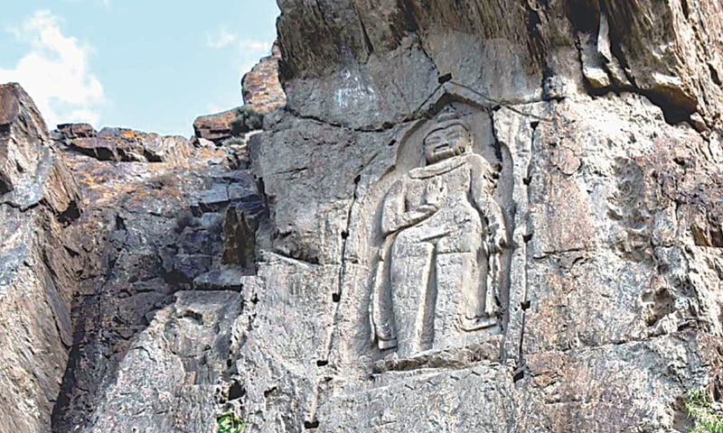
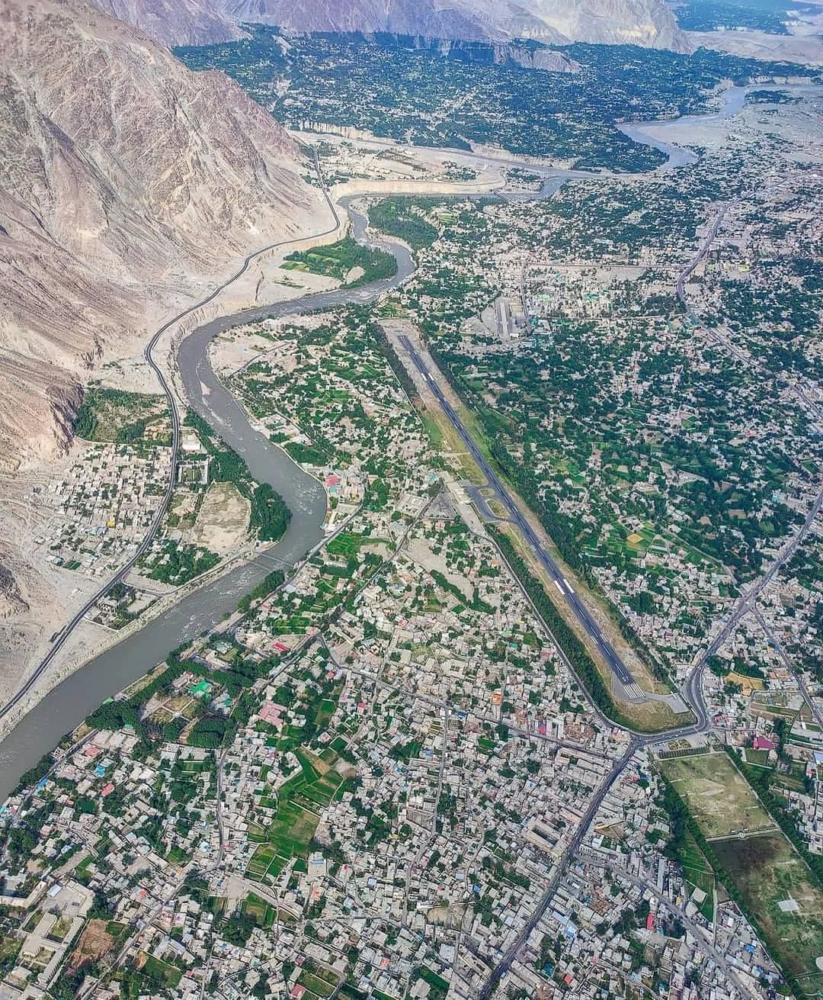
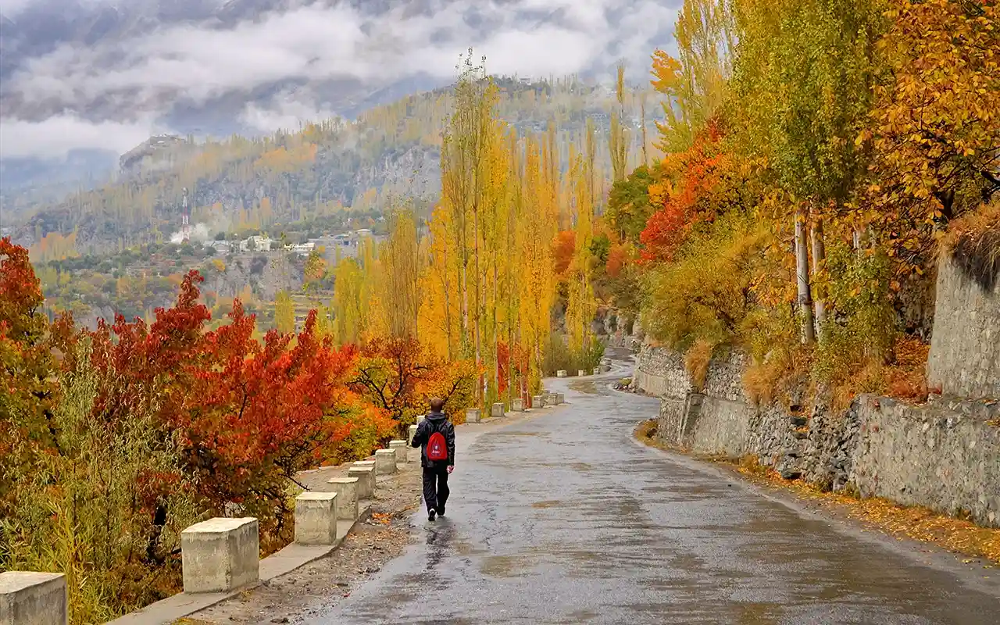

Historical Overview
Gilgit-Baltistan sits on routes that linked South Asia and Central Asia for millennia. Archaeological remains show Buddhist, Persian and Central Asian influences; later the region was shaped by local hill dynasties, Tibetan contacts and Mughal-era trade. In the 19th and 20th centuries the strategic passes drew imperial interest and modern infrastructure slowly arrived. Today Gilgit-Baltistan preserves layered histories — rock carvings, forts and traditional villages — alongside growing tourism that celebrates its natural and cultural heritage.
Gilgit-Baltistan has been a crossroads of civilizations, connecting South Asia with Central Asia for centuries. Its strategic location along ancient trade routes has shaped its unique cultural heritage.
Ancient Era
Buddhism flourished in the region; monasteries, stupas and rock carvings mark pilgrimage routes and cultural exchange between South and Central Asia.

Medieval Period
Hill forts such as Altit and Baltit became local seats of power. Architecture and craft traditions developed under regional dynasties and caravan trade.

Modern Era
With the expansion of modern roads and administration in the 20th century, education and tourism expanded, while communities continued to preserve language, crafts and seasonal festivals.

Culture & Traditions
Experience the vibrant culture, traditional crafts and community festivals.

Hunza Valley
Terraced orchards and traditional timber architecture give Hunza much of its charm.
Explore More
Traditional Crafts
Intricate embroidery, woodworking and local gemstone work are common handicrafts.
Explore More
Festivals
Navroz, polo and seasonal fairs bring communities together to celebrate food, sport and craft.
Explore More